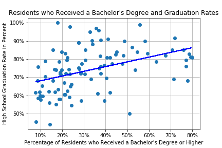

Studying the impact of crime and demographics on School Performance in New York City
The project team's original idea was to tell a story about schools
in New York City. We asked ourselves: “what are some of the most likely major
impacts on school performance.” The group quickly arrived at three major categories:
Crime (within the schools) – more incidents in the school would typically mean that there are more distractions and less time for learning
Median Household Income – those that are born into a higher standard of living would be more likely to have the means to afford tutors and the free time to complete class work at home.
Educational attainment in the family – It is assumed that if the parents have a higher level of education, they would place a greater emphasis on their children’s performance.
The team then began gathering data from NYC’s open data portal. This included the following:
Crime data within the schools where the students are learning
Education performance for NYC High Schools, which includes graduation rates and admittance into college.
Census data, which would cover the median household income and educational attainment variables.
Each member of the team took a dataset to research and better understand. A few key data development decisions occurred early in the process:
The granularity of the geographic area to be analyzed was critical to establish. The only way that the data could be understood was if all of the datasets had a common link and aggregation level.
New York City did have census data at the Neighborhood Tabulation Area (NTA) level, which meant that the direct US Census download would not be needed for this project.
The group found that the NTA geography was the common denominator between all the datasets. This became the primary key for our datasets.
The census data provided by NYC Open data was not formatted well, with custom headers and merged cells in an Excel file. At the same time, it was discovered that median household income was not included in this dataset. We found another dataset that cleaned up the NTA data provided by the NYC Open data and included the median household income. This became the primary source of census data for our project.
The school crime data was not sufficient to fit into our story. There were not enough years of data (only one intersecting year with school performance), not enough data records, the overall numbers were too low. Once this was discovered our data was expanded to include crime data statistics from NYPD.

Graduation Rate from High School compared to educational attainment in the NTA.